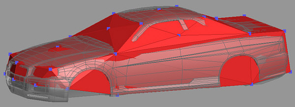
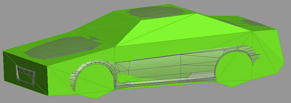
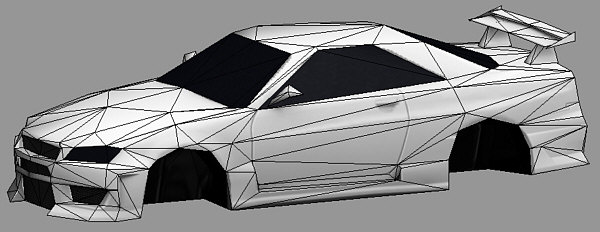

Meshes
are usually identified by their names. Please take care that some
.3ds-capable programs only support a limited number of characters in
the mesh name. Do not use more than 10 characters in a name to be on
the safe side!
Meshes
are usually identified by their names. Please take care that some
.3ds-capable programs only support a limited number of characters in
the mesh name. Do not use more than 10 characters in a name to be on
the safe side!A car's .p3d includes a number of 3d meshes. Some of them are essentially required to work properly, others are optional. Certain elements are not part of the vehicle's model, such as the driver, the wheels, the steering wheel as well as the rotating barrel of the minigun. These are attached by the game at run-time.
A car usually consists of some kind of “main mesh“ which will always be visible in-game and other meshes which might just be visible in certain configuration, such as in different tuning setups (imagine a selection of body kits, for instance). Thus, do not get confused that there will sometimes be a number of similar meshes at the same position in car model file, although only one or even none of them appears during gameplay.
As described more in detail later, car tuning also allows to visually remove meshes in-game and replace them by difference meshes (or just add those new parts next to the existing ones).
Meshes
are usually identified by their names. Please take care that some
.3ds-capable programs only support a limited number of characters in
the mesh name. Do not use more than 10 characters in a name to be on
the safe side!
In
Crashday 1 unit means 1m.
List of meshes in the P3D
This is a list of the car's .p3d mesh names (whether required or not) and their meanings.
|
Mesh name |
Description |
|
main |
the basic main mesh (rigid car body including the interior) |
|
gls_* (e.g. “gls_front“) |
smashable windows and glass meshes |
|
det_* (e.g. “det_mirl“) |
other detachable meshes (that usually includes: front bumper, rear bumper, outer-mirror meshes, license plate(s), wings, sideskirts, wipers etc.) |
|
any name (e.g.„engineblock“) |
other non-detachable meshes (e.g. parts that are only visible if you own a certain tuning part) |
|
headlights/taillights: headl_* (e.g. “headl_l“)
brakelights: brakel_* (e.g. “brakel_l“) |
additively rendered headlight/taillight/brakelight overlay meshes |
|
maincoll |
low-poly collision shape (not required, but strongly recommended for performance!) |
|
mainshad |
low-poly ray casting shape (e.g. to trace for minigun hits. Not required, but strongly recommended for performance!) |
|
lod |
one single “level of detail” mesh representing a low-poly average version of the whole car (including all meshes) for far distance (not required, but strongly recommended for performance! ) |
|
mg_body |
staticly attached minigun body (not required, but minigun barrel will "fly" if omitted) |
The bounding box of the car is calculated from the "main" mesh and thus represents
the car's global extents. Any position information set in the .cca (e.g. driver or wheel positions) is relative to the main mesh's center. If the main mesh is
missing the game will select another mesh as main mesh.
In your modeling application, the
“pivot point” of each additional mesh you create has to match the main mesh's “pivot point”.
While Crashday's engine gives your cars a nice and shiny look, it is very "strict" in the way you are modeling. You have to set vertices, polys and smoothing groups very carefully, otherwise your car looks In your modeling application, the
“pivot point” of each additional mesh you create has to match the main mesh's “pivot point”.
The “maincoll” collision shape mesh

The
collision shape “maincoll” (red)
The collision shape mesh “maincoll“ is used for collision detection. It is basicly the silhouette of the car without any complex details. The collision shape has to be untextured without any smoothing groups and should have as few vertices as possible. To still copy the car's shape roughly, a vertex count of 40 to 60 seems appropriate.
To improve the vehicles handling it is recommended to raise the front vertices of the collision shape. (like the bow of a ship)
Crashday
even runs without a “maincoll” mesh. In that case the
“main” mesh is used which usually has
very much more polygons slowing the game down a lot. To achieve
optimal performance be sure to have a “maincoll” mesh.
The “mainshad” ray-casting mesh

The
ray-casting shape “mainshad” (green)
The “mainshad” mesh was originally intended to be used as a shadow casting mesh. Although there finally isn't any real time shadows in Crashday, it still has other meanings.
It is similar to the “maincoll” mesh except that it covers the whole car but with less detail. A vertex count of 20 to 30 seems appropriate.
This mesh is only used for ray tracing operations. Those operations are tests like „Are we hit by a missile?“ or „Should the headlight flare be visible from the current point of view?“
Crashday
even runs without a “mainshad” mesh. In that case the
“main” mesh is used which usually has
very much more polygons. To achieve optimal performance be sure to
have a “mainshad” mesh.
The “lod” “level of detail” mesh

The
“level of detail” mesh “lod”
In Crashday the vehicle with its complete list of sub-meshes is replaced by the “lod” mesh at a certain distance. As there is only one “level of detail” mesh it should be a good compromise out of all the tuning options available, to make the switch to the “lod” mesh as little obvious as possible.
The “lod” mesh has to be fully textured. The interior is completely removed and the windows are replaced with black reflective material. A polygon count of around 500 seems appropriate.
We did not create any "lod" meshes by hand, but let them calculate by a tool from the highres version. As you can see the results are quite ok. It is just important to pick a good choice of meshes from all tuning options that seems to be the best "average"
Crashday
even runs without an “lod” mesh. To
achieve optimal performance be sure to have an “lod” mesh
available.
Headlights, taillights and brakelights

Overlay
meshes rendered additively “in front of” normal lights
Crashday only distinguishes between headlights and brakelights. Reverse gear lights are omitted and every taillight is treated as a headlight.
To simulate actually glowing lights in-game Crashday uses an “additive overlay mesh“ that is displayed “on top” of the headlight or brakelight. You can best imagine overlay meshes as colored contact lenses placed on an eye. In our situation the eye is the light and the contact lense is the glowing overlay mesh.
Those meshes exist for every headlight and every brakelight. For most cars this will result in four headlight and two brakelight meshes.
Adding flares
Next to the overlay meshes you can also add a special lens flare glow effect to the headlights and brakelights. This is done by simply adding omni lights to your model. Put them slightly in front of the overlay meshes and assign light colors suitable for the type of light.
The inner and outer light radius parameter stored in .3ds files will be averaged in Crashday finally making up the size of the flare in the game. You can assign a maximum of four flare lights to each overlay mesh.
The omni light objects are identified and associated to the mesh by their name. In the following example we have 6 overlay light meshes with 8 related omni lights in total.

Every
omni light (highlighted in orange) will be visible as a lens flare
glow in Crashday
|
Light mesh name |
related name for omni light |
|
headl_l (headlight left) |
headl_l_1 |
|
headl_r (headlight right) |
headl_r_1 |
|
headl_rl (taillight left) |
headl_rl_1 headl_rl_2 |
|
headl_rr (taillight right) |
headl_rr_1 headl_rr_2 |
|
brakel_l (brakelight left) |
brakel_l_1 |
|
brakel_r (brakelight lright |
brakel_r_1 |
In this example, except the taillights, every light mesh has one associated omni light.